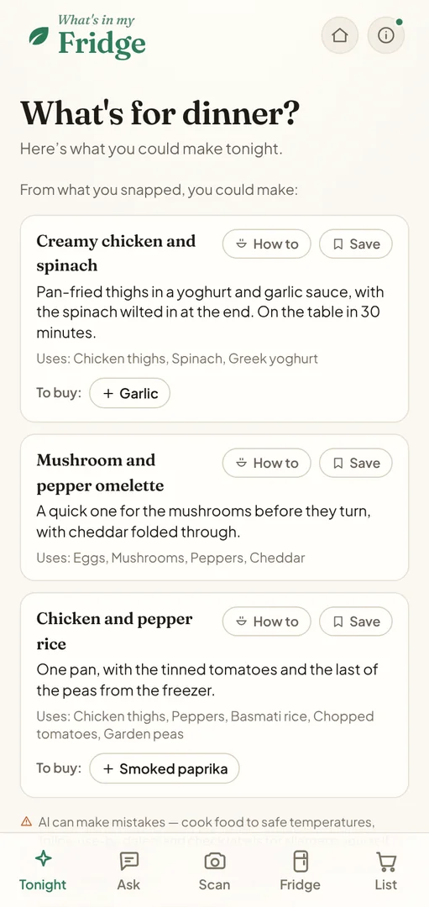

An app that knows what’s in the fridge.
Snap your shopping, use what’s going off, cook from what’s in.



of good food is binned by the average UK home, every year.
Most of it forgotten, not spoiled. The app keeps an eye on it — and turns “about to go off” into tonight’s dinner. (WRAP)
Your fridge · sorted by freshness
- Chicken
- Spinach
- Red peppers
- Milk
- Cheddar
Nudged the day before anything turns
Snap your shopping.
A photo does the typing
Where to file these
Each item is filed where it usually lives: fridge, freezer or pantry.
Read the receipt.
Shorthand in, real names out
Use it up first.
Amber soon, red past it
- Mushrooms
- Spinach
- Chicken thighs · 6
- Cheddar
Never run out.
Your usuals, back on the list
You normally keep these, but none are in stock.
My list
0 ticked off
Dinner from what’s there.
From the fridge to the plate
You have
Ingredients · for 2
- Chicken thighs4
- Olive oil1 tbsp
- Garlic2 cloves
- Greek yoghurt150g
- Spinach120g
Used up
You need
My list
How to make it
Season the chicken thighs and brown them in the olive oil, skin side down.
Turn them over, add the sliced garlic and cook for a minute.
Take the pan off the heat and stir in the Greek yoghurt.
Simmer gently until the chicken is cooked through.
Wilt in the spinach and serve.
Saved meals
The standout features.
Freshness, worked out.
No dates to type
It learns your usuals.
Three separate days
The list puts it away.
Tick it off, it’s filed
Works offline. Installs like an app.
Saved on the phone first
Features in detail.
Dinner tonight is free. Forever.
The cook-tonight loop costs nothing. Go Plus only if you want it to run your whole kitchen.
£0 / forever
- Snap your fridge → dinner tonight
- Ask what to cook, any time
- Freshness reminders
£3.99 / month
- Everything in Free
- Scan a whole shop in one go
- A running fridge, freezer & pantry
- A shopping list that builds itself
The bits people ask.
Is it really free?
Do I need to download it from the App Store?
What happens to my photos?
How accurate is the scanning?
Will it work for my diet or allergies?
Can I cancel anytime?
Keep food fresher, waste less.
Two dozen straight-talking UK guides on storage, freshness and dinner — free to read.
 Dinner ideasSick of staring into the fridge at 6pm?Read the guide →
Dinner ideasSick of staring into the fridge at 6pm?Read the guide →
 Dinner ideas“There’s nothing to eat”… in a full fridge?Read the guide →
Dinner ideas“There’s nothing to eat”… in a full fridge?Read the guide →
 Dinner ideasKnow the dish — but not what’s missing?Read the guide →
Dinner ideasKnow the dish — but not what’s missing?Read the guide →
 Dinner ideasWish someone would just talk you through it?Read the guide →
Dinner ideasWish someone would just talk you through it?Read the guide →
 Dinner ideasVeggie? Gluten-free? Nut allergy?Read the guide →
Dinner ideasVeggie? Gluten-free? Nut allergy?Read the guide →
 Dinner ideasDon’t know what to cook? Beating the daily fridge dilemmaRead the guide →
Dinner ideasDon’t know what to cook? Beating the daily fridge dilemmaRead the guide →
 Dinner ideasWhat can I make for dinner with what’s in my fridge?Read the guide →
Dinner ideasWhat can I make for dinner with what’s in my fridge?Read the guide →
 Using the appWhat if your fridge tracked itself?Read the guide →
Using the appWhat if your fridge tracked itself?Read the guide →
 Using the appTired of binning food you forgot you had?Read the guide →
Using the appTired of binning food you forgot you had?Read the guide →
 Using the appAlways forget the one thing you went for?Read the guide →
Using the appAlways forget the one thing you went for?Read the guide →
 Using the appOut of coffee. Again.Read the guide →
Using the appOut of coffee. Again.Read the guide →
 Save moneyBinning £60 of food a month?Read the guide →
Save moneyBinning £60 of food a month?Read the guide →
 Save moneyHow to stop wasting food at homeRead the guide →
Save moneyHow to stop wasting food at homeRead the guide →
 FreshnessHow long does butter last?Read the guide →
FreshnessHow long does bread last?Read the guide →
FreshnessHow long does butter last?Read the guide →
FreshnessHow long does bread last?Read the guide →
 FreshnessHow long do leftovers last in the fridge?Read the guide →
FreshnessHow long does cooked rice last?Read the guide →
FreshnessHow long does milk last?Read the guide →
FreshnessHow long does chicken last in the fridge?Read the guide →
FreshnessHow long do eggs last?Read the guide →
FreshnessHow long does spinach last?Read the guide →
FreshnessHow long does cheese last in the fridge?Read the guide →
FreshnessHow long does food last in the fridge?Read the guide →
FreshnessHow long do leftovers last in the fridge?Read the guide →
FreshnessHow long does cooked rice last?Read the guide →
FreshnessHow long does milk last?Read the guide →
FreshnessHow long does chicken last in the fridge?Read the guide →
FreshnessHow long do eggs last?Read the guide →
FreshnessHow long does spinach last?Read the guide →
FreshnessHow long does cheese last in the fridge?Read the guide →
FreshnessHow long does food last in the fridge?Read the guide →
 FreshnessHow to organise your fridge so nothing gets forgottenRead the guide →
FreshnessHow to organise your fridge so nothing gets forgottenRead the guide →
Get the app on your phone.
Open it on your phone and add it to your home screen.
On a computer? Point your phone’s camera at the code to open it there.